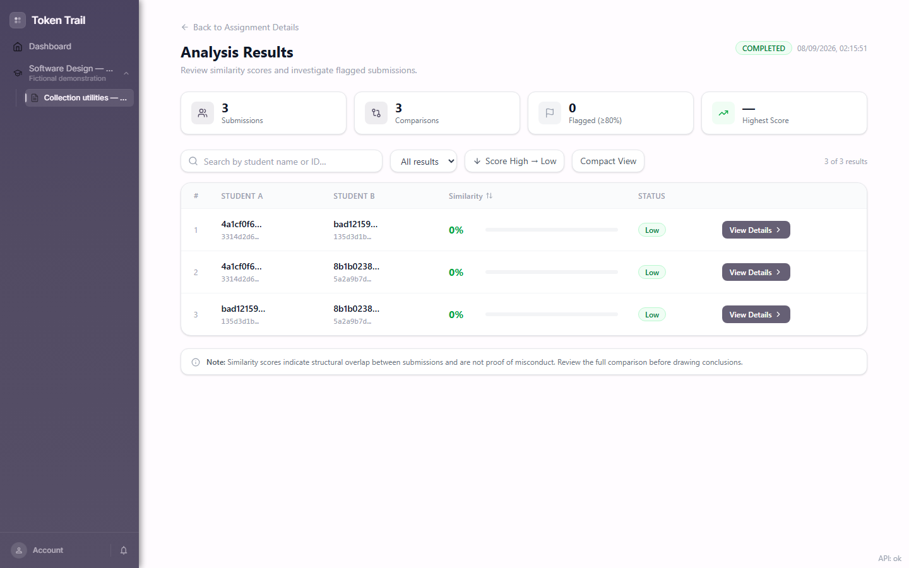
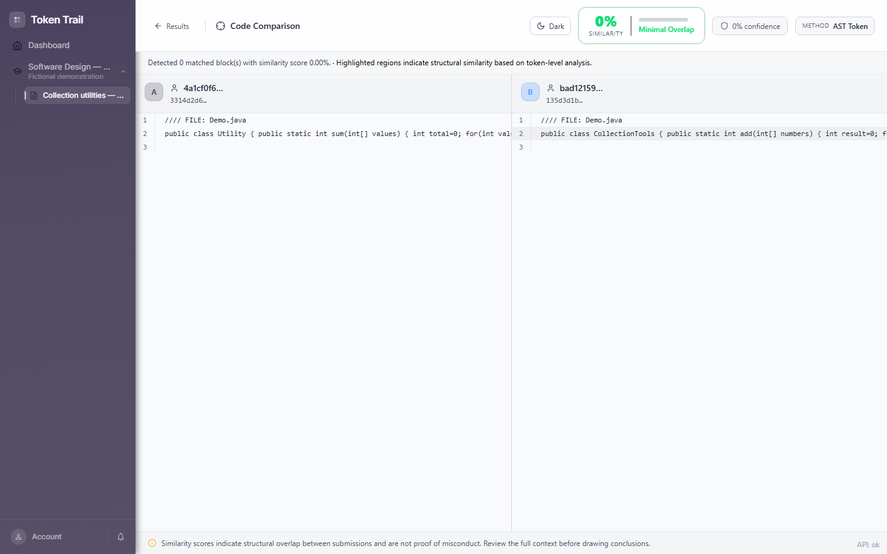

Making code similarity reviewable.
An academic-integrity tool that helps instructors move from a ranked list of submissions to the code behind a similarity result.
- My role
- Result APIs, privacy & testing
- Project year
- 2026
- Evidence
- Runtime evidence
- Built with
- Python · FastAPI · React · MongoDB · Docker

Why build it?
A score alone is difficult to act on. Instructors need to inspect a pair of submissions, understand the evidence, and access only the assignments they own.
What I built.
I built instructor-facing similarity-result APIs: ranked pair lists, pair details, comparison payloads, ownership checks, and pseudonymized identifiers. My work also covered privacy and retention controls, administrative operations, and external-evaluation tooling with API contract tests.
Attribution. Brock University group project. Teammates built the core AST/tokenization engine. The application shown is the team’s combined work; my contribution connects its results to APIs, privacy controls, and tests.
How it works.
- 1
Collect submissions
An assignment key accepts ZIP uploads into a course owned by an instructor.
- 2
Analyze asynchronously
A worker claims a queued run, processes submission pairs, and persists results.
- 3
Inspect the evidence
Open ranked results, pair metadata, and a side-by-side source comparison.
Look at the work.
Fresh Docker capture using three fictional submissions. The small fixture produced zero matching blocks; this demonstrates the review workflow, not detection accuracy. No real student data is included.

Decisions & tradeoffs.
Open each note for the implementation boundary, tradeoff, and next engineering question.
01Authorization follows the data
Knowing a result ID must not grant access. The API resolves the result through its run and assignment to enforce instructor ownership. Pseudonymized response identifiers reduce direct exposure of student identities; they do not replace authorization.
02Separate requests from analysis
The worker atomically claims queued runs in MongoDB and records running, completed, or failed state. The API can serve status independently. A production deployment also needs recovery for abandoned running jobs and a clear distinction between analysis failure and a true low score.
backend/app/routers/instructor_similarity.py · backend/app/services/analysis_service.py · backend/app/worker/worker.py
What this demonstrates.
Similarity is evidence for human review, never proof of misconduct. Evaluation needs representative datasets, false-positive analysis, and review of template exclusion. This demo does not establish readiness for institutional deployment.
Explore the implementation
Explore the source ↗Screenshots and output are evidence of the stated demonstration, not a claim that every feature or failure mode was tested.
Interested in the thinking behind it?
I’m happy to discuss the implementation, its limitations, and how I would develop it further.